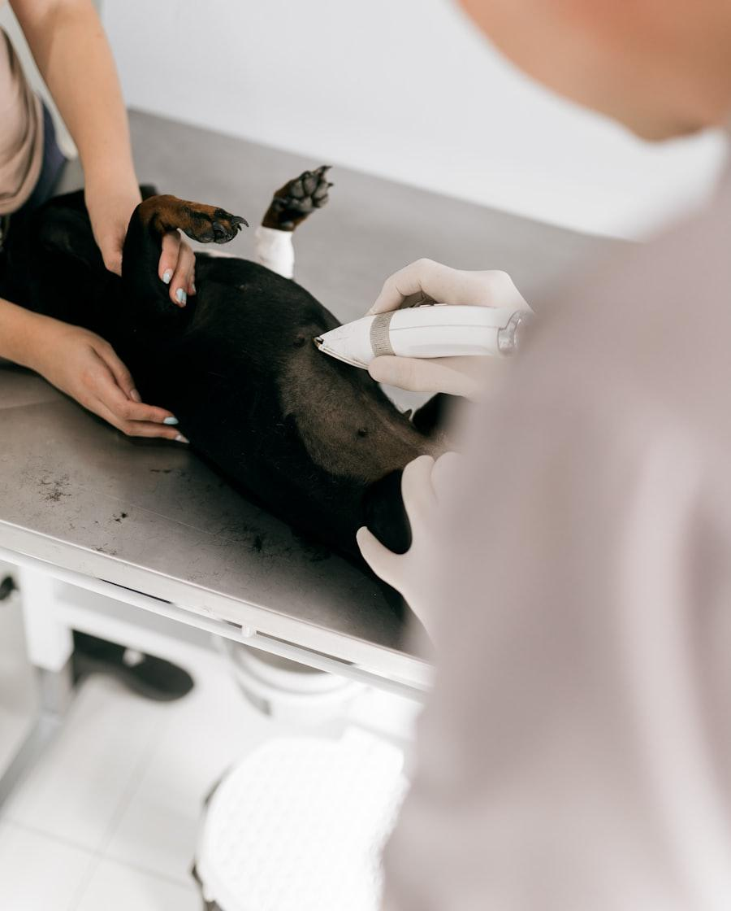

Escuchar la historia
Buena parte del diagnóstico está en lo que cuentas: desde cuándo, con qué frecuencia, si come igual, si bebe más, si ha cambiado algo en casa. Suele decir más que cualquier prueba, y por eso no lo despachamos en dos minutos.
Exploración completa sin reloj en la mano. Si algo no encaja, lo investigamos hasta tener una explicación que se sostenga.

Cómo lo hacemos
Buena parte del diagnóstico está en lo que cuentas: desde cuándo, con qué frecuencia, si come igual, si bebe más, si ha cambiado algo en casa. Suele decir más que cualquier prueba, y por eso no lo despachamos en dos minutos.
Peso, temperatura, mucosas, auscultación cardiaca y pulmonar, palpación abdominal, ganglios, boca, piel y oídos. Muchos hallazgos importantes aparecen lejos del motivo de la visita.
No pedimos una batería completa «por si acaso». Cada prueba responde a una pregunta concreta y te explicamos cuál es antes de hacerla, con su coste.
Un tratamiento perfecto que no se puede administrar no sirve. Ajustamos formatos y pautas a tu animal y a tu día a día, y te lo damos por escrito.
Tenemos en la clínica los medios para cerrar la mayoría de los casos sin derivar:
Enfermedades como la insuficiencia renal, la diabetes, el hipertiroidismo felino, la cardiopatía o la artrosis no se resuelven en una visita: se controlan durante años. En estos casos trabajamos con un calendario de revisiones acordado contigo, ajustes de dosis según los controles y un objetivo realista, que muchas veces no es curar sino que el animal viva bien el mayor tiempo posible.
Hay casos que exigen medios o experiencia que no tenemos: oncología compleja, neurocirugía, resonancia magnética, cirugía torácica avanzada. Cuando toca, lo decimos claramente y te derivamos a un centro de referencia con el informe y las pruebas ya hechas, para que no tengas que empezar de cero ni pagar dos veces lo mismo.
No te vamos a proponer pruebas cuyo resultado no vaya a cambiar nada de lo que hagamos después. Si una analítica no va a modificar el tratamiento, te lo diremos en vez de facturarla.
Y si no sabemos qué tiene, te lo diremos también. Es más útil que un diagnóstico inventado para cerrar la visita.
Preguntas
Reservamos unos 30 minutos. Si el caso es complejo y necesita más, preferimos citarte de nuevo con tiempo antes que atenderte con prisas.
Sí, y nos ayuda mucho. Tráelas en papel o en digital: evitan repetir pruebas, ahorran dinero y permiten ver la evolución.
Atendemos perros y gatos. Con conejos, roedores, aves y reptiles, llámanos antes: te confirmamos si podemos ayudarte o a qué centro de referencia acudir.
Otros servicios
Cuéntanoslo por teléfono. Muchas veces se resuelve con una cita tranquila esta semana, y saberlo te quita la preocupación.